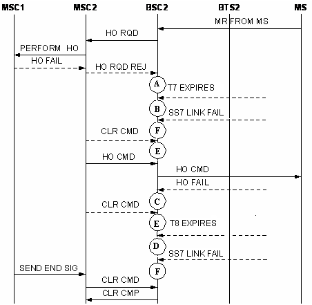
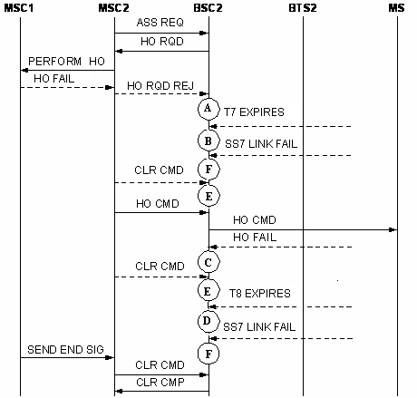

Measurement Counter
H35201:CELL_INTERRAN_TDD_OUTCELL_HO_FAIL_NOT_INCLUDE_DR_SD
H35271:CELL_INTERRAN_TDD_OUTCELL_HO_FAIL_TCHF
H35281:CELL_INTERRAN_TDD_OUTCELL_HO_FAIL_TCHH
H352Da1:CELL_INTERRAN_TDD_OUTCELL_HO_FAIL_MS_RPT_ABNORM_REL_UNS
H352Db1:CELL_INTERRAN_TDD_OUTCELL_HO_FAIL_MS_RPT_ABNORM_REL_CHN
H352Dc1:CELL_INTERRAN_TDD_OUTCELL_HO_FAIL_MS_RPT_ABNORM_REL_T_E
H352Dd1:CELL_INTERRAN_TDD_OUTCELL_HO_FAIL_MS_RPT_ABNORM_REL_NO_ACT
H352De1:CELL_INTERRAN_TDD_OUTCELL_HO_FAIL_MS_RPT_PREEMPT_RLS
H352Df1:CELL_INTERRAN_TDD_OUTCELL_HO_FAIL_MS_RPT_HO_TA
H352Dg1:CELL_INTERRAN_TDD_OUTCELL_HO_FAIL_MS_RPT_NO_CH_MODE
H352Dh1:CELL_INTERRAN_TDD_OUTCELL_HO_FAIL_MS_RPT_FREQ
H352Di1:CELL_INTERRAN_TDD_OUTCELL_HO_FAIL_MS_RPT_CALL_CLR
H352Dj1:CELL_INTERRAN_TDD_OUTCELL_HO_FAIL_MS_RPT_SEMANT
H352Dk1:CELL_INTERRAN_TDD_OUTCELL_HO_FAIL_MS_RPT_INV_MAN
H352Dl1:CELL_INTERRAN_TDD_OUTCELL_HO_FAIL_MS_RPT_MSG_TYPE_NEXISTENT
H352Dm1:CELL_INTERRAN_TDD_OUTCELL_HO_FAIL_MS_RPT_MSG_TYPE_NOT_COMPATIBLE
H352Dn1:CELL_INTERRAN_TDD_OUTCELL_HO_FAIL_MS_RPT_CONDITION_IE_ERR
H352Do1:CELL_INTERRAN_TDD_OUTCELL_HO_FAIL_MS_RPT_NO_CA
H352Dp1:CELL_INTERRAN_TDD_OUTCELL_HO_FAIL_MS_RPT_PROTOCL
H352Dq1:CELL_INTERRAN_TDD_OUTCELL_HO_FAIL_MS_RPT_OTHER
H352Ka1:CELL_INTERRAN_TDD_OUTCELL_HO_FAIL_HO_REJ_OM_INTERVENTION
H352Kb1:CELL_INTERRAN_TDD_OUTCELL_HO_FAIL_HO_REJ_EQUIP_FAIL
H352Kc1:CELL_INTERRAN_TDD_OUTCELL_HO_FAIL_HO_REJ_NO_RADIO_RES
H352Kd1:CELL_INTERRAN_TDD_OUTCELL_HO_FAIL_HO_REJ_REQ_NO_TER_RES
H352Ke1:CELL_INTERRAN_TDD_OUTCELL_HO_FAIL_HO_REJ_BSS_NOT_EQUIP
H352Kf1:CELL_INTERRAN_TDD_OUTCELL_HO_FAIL_HO_REJ_INVAILD_CELL
H352Kg1:CELL_INTERRAN_TDD_OUTCELL_HO_FAIL_HO_REJ_REQ_TRANSC_UNAIVL
H352Kh1:CELL_INTERRAN_TDD_OUTCELL_HO_FAIL_HO_REJ_CIR_POOL_MISMATCH
H352Ki1:CELL_INTERRAN_TDD_OUTCELL_HO_FAIL_HO_REJ_REQ_NO_SV
H352Kj1:CELL_INTERRAN_TDD_OUTCELL_HO_FAIL_HO_REJ_CIPH_ALG_NOT_SUPT
H352Kk1:CELL_INTERRAN_TDD_OUTCELL_HO_FAIL_HO_REJ_TER_CIR_ALRDY_ALLOC
H352Kl1:CELL_INTERRAN_TDD_OUTCELL_HO_FAIL_HO_REJ_INVAILD_MSG
H352Km1:CELL_INTERRAN_TDD_OUTCELL_HO_FAIL_HO_REJ_PROTOCOL_ERR
H352Kn1:CELL_INTERRAN_TDD_OUTCELL_HO_FAIL_HO_REJ_OTHER
H352Ha1:CELL_INTERRAN_TDD_OUTCELL_HO_FAIL_CLR_CMD_RADIO_INTF_MSG_FAIL
H352Hb1:CELL_INTERRAN_TDD_OUTCELL_HO_FAIL_CLR_CMD_RADIO_INTF_FAIL
H352Hc1:CELL_INTERRAN_TDD_OUTCELL_HO_FAIL_CLR_CMD_OM_INTERVENTION
H352Hd1:CELL_INTERRAN_TDD_OUTCELL_HO_FAIL_CLR_CMD_EQUIP_FAIL
H352He1:CELL_INTERRAN_TDD_OUTCELL_HO_FAIL_CLR_CMD_PREEMPTION
H352Hf1:CELL_INTERRAN_TDD_OUTCELL_HO_FAIL_CLR_CMD_INVALID_MSG
H352HgT:ELL_INTERRAN_TDD_OUTCELL_HO_FAIL_CLR_CMD_PROTOCOL_ERR
H352HhT:ELL_INTERRAN_TDD_OUTCELL_HO_FAIL_CLR_CMD_OTHER
H352G1:CELL_INTERRAN_TDD_OUTCELL_HO_FAIL_A_INTERF_FAIL
H352L1:CELL_INTERRAN_TDD_OUTCELL_HO_FAIL_T7_EXP
H352C1:CELL_INTERRAN_TDD_OUTCELL_HO_FAIL_T8_EXP
Description
During the outgoing inter-RAT inter-cell handover (TDD) procedure, if the handover fails because of various causes before the BSC receives the CLEAR CMD message with the cause value of Ho Success from the MSC, the specific counter is measured based on the source channel types, handover failure causes, handover causes. Together with Outgoing Inter-RAT Inter-Cell Handover Requests (TDD) and Outgoing Inter-RAT Inter-Cell Handover Commands (TDD), the measurement indicates the performance of outgoing inter-RAT inter-cell handovers (TDD).
- H35201:CELL_INTERRAN_TDD_OUTCELL_HO_FAIL_NOT_INCLUDE_DR_SD
- H35271:CELL_INTERRAN_TDD_OUTCELL_HO_FAIL_TCHF
- H35281:CELL_INTERRAN_TDD_OUTCELL_HO_FAIL_TCHH
- (1) The timer T7 for the BSC to wait for an HO CMD message expires.
- (2) The BSC receives an HO RQD REJ message from the MSC.
- (3) The MS fails to access the new channel and then reconnects to the old channel.
- (4) The timer T8 for the BSC to wait for an HO CMP message expires.
- (5) The BSC receives a CLEAR CMD message from the MSC.
- (6) SS7 link failure on the A interface
- (1) During the outgoing external inter-cell handover (TDD) procedure, timer T7 is started after the BSC sends the HO RQD to the MSC and waits for the HO CMD command from the MSC. If no HO CMD is received by the BSC before T7 expires, the BSC re-sends
the HO RQD message. The following counter provides the number of failed outgoing inter-RAT inter-cell handovers (TDD) when the number of resending times has exceeded the maximum configuration.
- H352L1:CELL_INTERRAN_TDD_OUTCELL_HO_FAIL_T7_EXP
- (2) The following counters provide the number of times that the BSC terminates the outgoing inter-RAT inter-cell handover (TDD) because it receives an HO RQD REJ message from the MSC after sending the HO RQD message to the MSC.
- The counter H352Ka1:CELL_INTERRAN_TDD_OUTCELL_HO_FAIL_HO_REJ_OM_INTERVENTION is measured when the cause value carried in the HO RQD REJ message is OM Intervention.
- The counter H352Kb1:CELL_INTERRAN_TDD_OUTCELL_HO_FAIL_HO_REJ_EQUIP_FAIL is measured when the cause value carried in the HO RQD REJ message is Equipment Failure.
- The counter H352Kc1:CELL_INTERRAN_TDD_OUTCELL_HO_FAIL_HO_REJ_NO_RADIO_RES is measured when the cause value carried in the HO RQD REJ message is No Radio Resource Available.
- The counter H352Kd1:CELL_INTERRAN_TDD_OUTCELL_HO_FAIL_HO_REJ_REQ_NO_TER_RES is measured when the cause value carried in the HO RQD REJ message is Requested Terrestrial Resource Unavailable.
- The counter H352Ke1:CELL_INTERRAN_TDD_OUTCELL_HO_FAIL_HO_REJ_BSS_NOT_EQUIP is measured when the cause value carried in the HO RQD REJ message is BSS not Equipped.
- The counter H352Kf1:CELL_INTERRAN_TDD_OUTCELL_HO_FAIL_HO_REJ_INVAILD_CELL is measured when the cause value carried in the HO RQD REJ message is Invalid Cell.
- The counter H352Kg1:CELL_INTERRAN_TDD_OUTCELL_HO_FAIL_HO_REJ_REQ_TRANSC_UNAIVL is measured when the cause value carried in the HO RQD REJ message is Requested Transcoding/Rate Adaption Unavailable.
- The counter H352Kh1:CELL_INTERRAN_TDD_OUTCELL_HO_FAIL_HO_REJ_CIR_POOL_MISMATCH is measured when the cause value carried in the HO RQD REJ message is Circuit Pool Mismatch.
- The counter H352Ki1:CELL_INTERRAN_TDD_OUTCELL_HO_FAIL_HO_REJ_REQ_NO_SV is measured when the cause value carried in the HO RQD REJ message is Requested Speech Version Unavailable.
- The counter H352Kj1:CELL_INTERRAN_TDD_OUTCELL_HO_FAIL_HO_REJ_CIPH_ALG_NOT_SUPT is measured when the cause value carried in the HO RQD REJ message is Ciphering Algorithm not Supported.
- The counter H352Kk1:CELL_INTERRAN_TDD_OUTCELL_HO_FAIL_HO_REJ_TER_CIR_ALRDY_ALLOC is measured when the cause value carried in the HO RQD REJ message is Terrestrial Circuit Already Allocated.
- The counter H352Kl1:CELL_INTERRAN_TDD_OUTCELL_HO_FAIL_HO_REJ_INVAILD_MSG is measured when the cause value carried in the HO RQD REJ message is Invalid Message.
- The counter H352Km1:CELL_INTERRAN_TDD_OUTCELL_HO_FAIL_HO_REJ_PROTOCOL_ERR is measured when the cause value carried in the HO RQD REJ message is Protocol Error between BSS and MSC.
- The counter H352Kn1:CELL_INTERRAN_TDD_OUTCELL_HO_FAIL_HO_REJ_OTHER is measured when the cause value carried in the HO RQD REJ message is Other Causes.
- (3) In the outgoing inter-RAT inter-cell handover (TDD) procedure, the BSC sends an HO CMD message to the MS through the originating cell and initiates timer T8 to wait for an HO CMP message. If the MS reconnects to the old channel and sends an
HO FAIL message on the old channel before T8 expires, the specific one of the following counters is measured in the target cell based on the cause value.
- The counter H352Da1:CELL_INTERRAN_TDD_OUTCELL_HO_FAIL_MS_RPT_ABNORM_REL_UNS is measured when the cause value carried in the HO FAIL message is Abnormal Release, Unspecified.
- The counter H352Db1:CELL_INTERRAN_TDD_OUTCELL_HO_FAIL_MS_RPT_ABNORM_REL_CHN is measured when the cause value carried in the HO FAIL message is Abnormal Release, Channel Unacceptable.
- The counter H352Dc1:CELL_INTERRAN_TDD_OUTCELL_HO_FAIL_MS_RPT_ABNORM_REL_T_E is measured when the cause value carried in the HO FAIL message is Abnormal Release, Timer Expired.
- The counter H352Dd1:CELL_INTERRAN_TDD_OUTCELL_HO_FAIL_MS_RPT_ABNORM_REL_NO_ACT is measured when the cause value carried in the HO FAIL message is Abnormal Release, No Activity on the Radio Path.
- The counter H352De1:CELL_INTERRAN_TDD_OUTCELL_HO_FAIL_MS_RPT_PREEMPT_RLS is measured when the cause value carried in the HO FAIL message is Preemptive Release.
- The counter H352Df1:CELL_INTERRAN_TDD_OUTCELL_HO_FAIL_MS_RPT_HO_TA is measured when the cause value carried in the HO FAIL message is Handover Failed, Timing Advance out of Range.
- The counter H352Dg1:CELL_INTERRAN_TDD_OUTCELL_HO_FAIL_MS_RPT_NO_CH_MODE is measured when the cause value carried in the HO FAIL message is Channel Mode Unavailable.
- The counter H352Dh1:CELL_INTERRAN_TDD_OUTCELL_HO_FAIL_MS_RPT_FREQ is measured when the cause value carried in the HO FAIL message is Frequency Unavailable.
- The counter H352Di1:CELL_INTERRAN_TDD_OUTCELL_HO_FAIL_MS_RPT_CALL_CLR is measured when the cause value carried in the HO FAIL message is Call Already Cleared.
- The counter H352Dj1:CELL_INTERRAN_TDD_OUTCELL_HO_FAIL_MS_RPT_SEMANT is measured when the cause value carried in the HO FAIL message is Semantically Incorrect Message.
- The counter H352Dk1:CELL_INTERRAN_TDD_OUTCELL_HO_FAIL_MS_RPT_INV_MAN is measured when the cause value carried in the HO FAIL message is Invalid Mandatory Information.
- The counter H352Dl1:CELL_INTERRAN_TDD_OUTCELL_HO_FAIL_MS_RPT_MSG_TYPE_NEXISTENT is measured when the cause value carried in the HO FAIL message is Message Type Non-existent or Not Implemented.
- The counter H352Dm1:CELL_INTERRAN_TDD_OUTCELL_HO_FAIL_MS_RPT_MSG_TYPE_NOT_COMPATIBLE is measured when the cause value carried in the HO FAIL message is Message Type Not Compatible with Protocol State.
- The counter H352Dn1:CELL_INTERRAN_TDD_OUTCELL_HO_FAIL_MS_RPT_CONDITION_IE_ERR is measured when the cause value carried in the HO FAIL message is Conditional IE Error.
- The counter H352Do1:CELL_INTERRAN_TDD_OUTCELL_HO_FAIL_MS_RPT_NO_CA is measured when the cause value carried in the HO FAIL message is No Cell Allocation Available.
- The counter H352Dp1:CELL_INTERRAN_TDD_OUTCELL_HO_FAIL_MS_RPT_PROTOCL is measured when the cause value carried in the HO FAIL message is Protocol Error Unspecified.
- The counter H352Dq1:CELL_INTERRAN_TDD_OUTCELL_HO_FAIL_MS_RPT_OTHER is measured when the cause value carried in the HO FAIL message is Other Causes.
- (4) In the outgoing inter-RAT inter-cell handover (TDD) procedure, after sending the HO CMD message to the MS, the BSC starts the timer T8 to wait for the CLEAR CMD message from the MSC. The following counter provides the number of times that the
BSC terminates the handover due to the expiration of T8.
- H352C1:CELL_INTERRAN_TDD_OUTCELL_HO_FAIL_T8_EXP
- (5) The following counters provide the number of times that the BSC terminates the outgoing inter-RAT inter-cell handover (TDD) because the BSC receives a CLEAR CMD message from the MSC and the cause value carried in the message is not Handover
successful.
- The counter H352Ha1:CELL_INTERRAN_TDD_OUTCELL_HO_FAIL_CLR_CMD_RADIO_INTF_MSG_FAIL is measured when the cause value carried in the CLEAR CMD message is Radio Interface Message Failure.
- The counter H352Hb1:CELL_INTERRAN_TDD_OUTCELL_HO_FAIL_CLR_CMD_RADIO_INTF_FAIL is measured when the cause value carried in the CLEAR CMD message is Radio Interface Failure.
- The counter H352Hc1:CELL_INTERRAN_TDD_OUTCELL_HO_FAIL_CLR_CMD_OM_INTERVENTION is measured when the cause value carried in the CLEAR CMD message is OM Intervention.
- The counter H352Hd1:CELL_INTERRAN_TDD_OUTCELL_HO_FAIL_CLR_CMD_EQUIP_FAIL is measured when the cause value carried in the CLEAR CMD message is Equipment Failure.
- The counter H352He1:CELL_INTERRAN_TDD_OUTCELL_HO_FAIL_CLR_CMD_PREEMPTION is measured when the cause value carried in the CLEAR CMD message is Preemption.
- The counter H352Hf1:CELL_INTERRAN_TDD_OUTCELL_HO_FAIL_CLR_CMD_INVALID_MSG is measured when the cause value carried in the CLEAR CMD message is Invalid Message.
- The counter H352Hg1:CELL_INTERRAN_TDD_OUTCELL_HO_FAIL_CLR_CMD_PROTOCOL_ERR is measured when the cause value carried in the CLEAR CMD message is Protocol Error between BSS and MSC.
- The counter H352Hh1:CELL_INTERRAN_TDD_OUTCELL_HO_FAIL_CLR_CMD_OTHER is measured when the cause value carried in the CLEAR CMD message is Other Causes.
- (6) The following counter provides the number of times that the outgoing inter-RAT inter-cell handover (TDD) fails because the BSC detects an SS7 link failure on the A interface and releases the call.
- H352G1:CELL_INTERRAN_TDD_OUTCELL_HO_FAIL_A_INTERF_FAIL
Unit
Integer number or integer.
Measurement Point
Figure 1 shows the measurement of the counters related to outgoing inter-RAT inter-cell handover (excluding directed retry) (TDD) failure.

Figure 2 shows the measurement of the counters related to outgoing inter-RAT inter-cell handover (directed retry) (TDD) failure.

- As shown in Figure 1 and Figure 2, during the outgoing inter-RAT inter-cell handover (TDD) procedure, the specific one of the following counter is measured at A if the handover fails because the BSC receives
an HO RQD REJ message from the MSC after sending the HO RQD message to the MSC.
- H352Ka1:CELL_INTERRAN_TDD_OUTCELL_HO_FAIL_HO_REJ_OM_INTERVENTION
- H352Kb1:CELL_INTERRAN_TDD_OUTCELL_HO_FAIL_HO_REJ_EQUIP_FAIL
- H352Kc1:CELL_INTERRAN_TDD_OUTCELL_HO_FAIL_HO_REJ_NO_RADIO_RES
- H352Kd1:CELL_INTERRAN_TDD_OUTCELL_HO_FAIL_HO_REJ_REQ_NO_TER_RES
- H352Ke1:CELL_INTERRAN_TDD_OUTCELL_HO_FAIL_HO_REJ_BSS_NOT_EQUIP
- H352Kf1:CELL_INTERRAN_TDD_OUTCELL_HO_FAIL_HO_REJ_INVAILD_CELL
- H352Kg1:CELL_INTERRAN_TDD_OUTCELL_HO_FAIL_HO_REJ_REQ_TRANSC_UNAIVL
- H352Kh1:CELL_INTERRAN_TDD_OUTCELL_HO_FAIL_HO_REJ_CIR_POOL_MISMATCH
- H352Ki1:CELL_INTERRAN_TDD_OUTCELL_HO_FAIL_HO_REJ_REQ_NO_SV
- H352Kj1:CELL_INTERRAN_TDD_OUTCELL_HO_FAIL_HO_REJ_CIPH_ALG_NOT_SUPT
- H352Kk1:CELL_INTERRAN_TDD_OUTCELL_HO_FAIL_HO_REJ_TER_CIR_ALRDY_ALLOC
- H352Kl1:CELL_INTERRAN_TDD_OUTCELL_HO_FAIL_HO_REJ_INVAILD_MSG
- H352Km1:CELL_INTERRAN_TDD_OUTCELL_HO_FAIL_HO_REJ_PROTOCOL_ERR
- H352Kn1:CELL_INTERRAN_TDD_OUTCELL_HO_FAIL_HO_REJ_OTHER
- During the outgoing inter-RAT inter-cell handover (TDD) procedure, timer T7 is started after the BSC sends the HO RQD to the MSC. As shown in Figure 1 and Figure 2, the following counter is measured at B if
the handover fails because T7 expires and the number of resending times has exceeded the maximum configuration.
- H352L1:CELL_INTERRAN_TDD_OUTCELL_HO_FAIL_T7_EXP
- During the outgoing inter-RAT inter-cell handover (TDD) procedure, after the BSC sends the HO CMD message to the MS, if the MS fails to access the new channel, it reports an HO FAIL message to the BSC. As shown in Figure 1 and Figure 2, the specific one of the following counter is measured at C when the BSC receives the HO FAIL message.
- H352Da1:CELL_INTERRAN_TDD_OUTCELL_HO_FAIL_MS_RPT_ABNORM_REL_UNS
- H352Db1:CELL_INTERRAN_TDD_OUTCELL_HO_FAIL_MS_RPT_ABNORM_REL_CHN
- H352Dc1:CELL_INTERRAN_TDD_OUTCELL_HO_FAIL_MS_RPT_ABNORM_REL_T_E
- H352Dd1:CELL_INTERRAN_TDD_OUTCELL_HO_FAIL_MS_RPT_ABNORM_REL_NO_ACT
- H352De1:CELL_INTERRAN_TDD_OUTCELL_HO_FAIL_MS_RPT_PREEMPT_RLS
- H352Df1:CELL_INTERRAN_TDD_OUTCELL_HO_FAIL_MS_RPT_HO_TA
- H352Dg1:CELL_INTERRAN_TDD_OUTCELL_HO_FAIL_MS_RPT_NO_CH_MODE
- H352Dh1:CELL_INTERRAN_TDD_OUTCELL_HO_FAIL_MS_RPT_FREQ
- H352Di1:CELL_INTERRAN_TDD_OUTCELL_HO_FAIL_MS_RPT_CALL_CLR
- H352Dj1:CELL_INTERRAN_TDD_OUTCELL_HO_FAIL_MS_RPT_SEMANT
- H352Dk1:CELL_INTERRAN_TDD_OUTCELL_HO_FAIL_MS_RPT_INV_MAN
- H352Dl1:CELL_INTERRAN_TDD_OUTCELL_HO_FAIL_MS_RPT_MSG_TYPE_NEXISTENT
- H352Dm1:CELL_INTERRAN_TDD_OUTCELL_HO_FAIL_MS_RPT_MSG_TYPE_NOT_COMPATIBLE
- H352Dn1:CELL_INTERRAN_TDD_OUTCELL_HO_FAIL_MS_RPT_CONDITION_IE_ERR
- H352Do1:CELL_INTERRAN_TDD_OUTCELL_HO_FAIL_MS_RPT_NO_CA
- H352Dp1:CELL_INTERRAN_TDD_OUTCELL_HO_FAIL_MS_RPT_PROTOCL
- H352Dq1:CELL_INTERRAN_TDD_OUTCELL_HO_FAIL_MS_RPT_OTHER
- During the outgoing inter-RAT inter-cell handover (TDD) procedure, timer T8 is started after the BSC sends the HO CMD to the MS. As shown in Figure 1 and Figure 2, the following counter is measured at D when
the handover fails because T8 expires.
- H352C1:CELL_INTERRAN_TDD_OUTCELL_HO_FAIL_T8_EXP
- As shown in Figure 1 and Figure 2, during the outgoing inter-RAT inter-cell handover (TDD) procedure, the specific one of the following counter is measured at E if the handover fails because the BSC releases
the call after receiving a CLEAR CMD from the MSC and the cause value carried in the message is not Handover successful.
- H352Ha1:CELL_INTERRAN_TDD_OUTCELL_HO_FAIL_CLR_CMD_RADIO_INTF_MSG_FAIL
- H352Hb1:CELL_INTERRAN_TDD_OUTCELL_HO_FAIL_CLR_CMD_RADIO_INTF_FAIL
- H352Hc1:CELL_INTERRAN_TDD_OUTCELL_HO_FAIL_CLR_CMD_OM_INTERVENTION
- H352Hd1:CELL_INTERRAN_TDD_OUTCELL_HO_FAIL_CLR_CMD_EQUIP_FAIL
- H352He1:CELL_INTERRAN_TDD_OUTCELL_HO_FAIL_CLR_CMD_PREEMPTION
- H352Hf1:CELL_INTERRAN_TDD_OUTCELL_HO_FAIL_CLR_CMD_INVALID_MSG
- H352Hg1:CELL_INTERRAN_TDD_OUTCELL_HO_FAIL_CLR_CMD_PROTOCOL_ERR
- H352Hh1:CELL_INTERRAN_TDD_OUTCELL_HO_FAIL_CLR_CMD_OTHER
- As shown in Figure 1 and Figure 2, the following counter is measured at F when the outgoing inter-RAT inter-cell handover (TDD) fails because the BSC detects an SS7 link failure on the A interface and releases
the call.
- H352G1:CELL_INTERRAN_TDD_OUTCELL_HO_FAIL_A_INTERF_FAIL
- As shown in Figure 1, the following counter is measured at A, B, C, D, E, and F when the outgoing inter-RAT inter-cell handover (TDD) fails.
- H35201:CELL_INTERRAN_TDD_OUTCELL_HO_FAIL_NOT_INCLUDE_DR_SD
- As shown in Figure 1 and Figure 2, the specific one of the following counter is measured at A, B, C, D, E, and F when the outgoing inter-RAT inter-cell handover (TDD) fails.
- H35271:CELL_INTERRAN_TDD_OUTCELL_HO_FAIL_TCHF
- H35281:CELL_INTERRAN_TDD_OUTCELL_HO_FAIL_TCHH
Formula
This is an original counter without involving any formula.